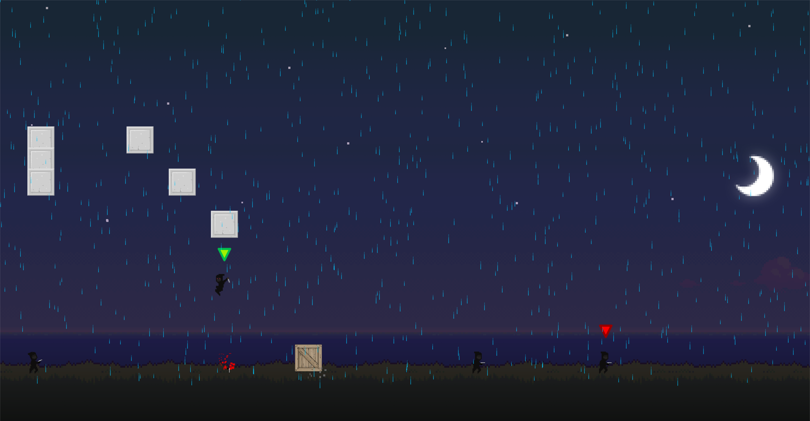

KillShot
KillShot is a small game where you recieve contracts to kill a target, the more skilled the takedown the better the grade you recieve at the end. The target will usually be protected and hard to reach. However, this is no problem for you, you are the best of the best.
Background
I created KillShot for an independent assignment at the Auckland University of Technology. This project was my first time making a 2D game and my first time using the following technologies and langauges:
-
C++
-
SDL
-
Box2D
-
FMOD
Using all of the above for the my first time was a huge learning experience and assisted me to ultimately produce something I am very proud of. However, even though I am proud of KillShot due to my scope for the project being quite large for the given timeframe I wasn't able to finish KillShot the way I had hoped.
Screenshots
Main Menu:
In-Game Contract: 
In-Game Editor:
Videos
Comming soon
Code
Bellow I have provided the source code I wrote for the AI pawn controllers in KillShot:
#include "AIController.h"
#include "Box2D.h"
#include "RayCast.h"
AIController::AIController(Pawn* pawnToPosses, Pawn* playerCharacter)
{
possesPawn(pawnToPosses);
this->playerCharacter = playerCharacter;
}
void
AIController::possesPawn(Pawn* pawnToPosses)
{
possesedPawn = pawnToPosses;
}
void
AIController::changeState(AIState newState)
{
currentState = newState;
stateTimeElapsed = 0.0f;
}
void
AIController::Process(float deltaTime)
{
if (possesedPawn && playerCharacter)
{
stateTimeElapsed += deltaTime;
coolDownRemaining -= deltaTime;
// If the player is touching the possed pawn, change the pawns state to alerted
for (b2ContactEdge* ce = possesedPawn->GetCollisionBody()->GetContactList(); ce != NULL; ce = ce->next)
{
Pawn* tmp = static_cast<Pawn*>(ce->other->GetUserData());
if (tmp && tmp->GetPawnType() == PawnType::PLAYER)
changeState(ALERTED);
}
// If the pawn is alerted or is facing the players location, send a ray cast to see if the pawn can see the player.
if (currentState == ALERTED || (possesedPawn->IsHFlipped() && playerCharacter->GetPositionX() <= possesedPawn->GetPositionX()) || (!possesedPawn->IsHFlipped() && playerCharacter->GetPositionX() >= possesedPawn->GetPositionX()))
{
b2Vec2 playerLocation = playerCharacter->GetCollisionBody()->GetPosition();
b2Vec2 possesionLocation = possesedPawn->GetCollisionBody()->GetPosition();
RayCast callback;
possesedPawn->GetCollisionBody()->GetWorld()->RayCast(&callback, possesionLocation, playerLocation);
if (callback.m_hit)
{
Pawn* tmp = static_cast<Pawn*>(callback.closestBody->GetUserData());
// Check whether the raycast found the player before any other obstructions
if (tmp && tmp->GetPawnType() == PawnType::PLAYER)
{
if (possesedPawn->IsWeaponEquiped())
{
changeState(ATTACKING);
switch (possesedPawn->GetCurrentWeapon()->GetWeaponType())
{
case WeaponType::KNIFE:
possesedPawn->SetHorizontalInput((playerCharacter->GetPositionX() > possesedPawn->GetPositionX()) ? 1.0f : -1.0f);
possesedPawn->SetPawnLookVector(playerCharacter->GetPositionX(), playerCharacter->GetPositionY(), false);
break;
case WeaponType::PISTOL:
possesedPawn->SetPawnLookVector(playerCharacter->GetPositionX(), playerCharacter->GetPositionY(), false);
if (coolDownRemaining <= 0.0f)
{
possesedPawn->PrimaryAttack();
coolDownRemaining = attackCoolDown;
}
break;
}
}
else
{
changeState(ALERTED);
possesedPawn->SetPawnLookVector(playerCharacter->GetPositionX(), playerCharacter->GetPositionY(), false);
}
}
else
{
possesedPawn->SetHorizontalInput(0.0f);
if (currentState == ATTACKING)
changeState(ALERTED);
if (stateTimeElapsed >= 3.0f)
{
changeState(IDLE);
possesedPawn->SetPawnLookVector(1.0f, 0.01f, true);
}
}
}
}
else
{
possesedPawn->SetHorizontalInput(0.0f);
if (stateTimeElapsed >= 3.0f)
{
changeState(IDLE);
possesedPawn->SetPawnLookVector(1.0f, 0.01f, true);
}
}
}
}
Downloads
Download the latest playable alpha build here: KillShot - Alpha
References
Catto, E. (2015). Box2D | A 2D Physics Engine for Games. [online] Box2d.org. Available at: http://box2d.org/ [Accessed 23 Oct. 2016].
Fmod.org. (2016). FMOD. [online] Available at: http://www.fmod.org/ [Accessed 23 Oct. 2016].
YouTube. (2016). NoCopyrightSounds. [online] Available at: https://www.youtube.com/user/NoCopyrightSounds [Accessed 23 Oct. 2016].
OpenGameArt.org. (2016). OpenGameArt.org. [online] Available at: http://opengameart.org/ [Accessed 23 Oct. 2016].
Libsdl.org. (2016). Simple DirectMedia Layer - Homepage. [online] Available at: https://www.libsdl.org/ [Accessed 23 Oct. 2016].